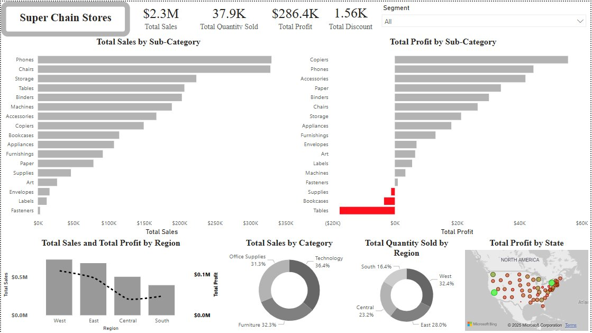

About Me
Hi, I’m Emeka Ikechukwu, a results-driven Data Scientist passionate about transforming complex data into actionable insights. With a strong background in Biochemistry and an M.Sc. in Data Science, I specialize in machine learning, data analysis, and data visualization to help organizations make data-driven decisions that drive growth.
My technical toolkit includes Python, R, SQL, TensorFlow, Scikit-learn, and advanced data visualization tools like Tableau and Power BI. I’ve designed predictive models for healthcare, developed intelligent recommender systems, and even built an AI-powered Igbo dish classifier using deep learning and NLP, all showcased on my portfolio.
I love solving real-world problems, building scalable solutions, and turning raw data into stories that inspire action. Beyond technical skills, I bring strong critical thinking, communication, and collaboration abilities to every project.
Whether it’s building a diabetes prediction model with 97% accuracy or crafting custom recommendation engines, I thrive on helping businesses and individuals unlock the power of their data.
...but I know that I enjoy drawing “bubbling cocktail of useful information” from raw data that means nothing but characters in rows and columns to the layman.

A CNN-based image classifier (ResNet18 + FastAI) to identify Igbo dishes and integrated Gemini AI to generate real-time info on each dish’s history, ingredients, and preparation. Deployed via Streamlit with a user-friendly interface for image uploads and cultural exploration.
An AI-powered tool analyzes your WhatsApp chats, revealing your most active times, top words, emoji usage, and even sentiment, like a Sherlock Holmes for your messages!
Multiple classification models that predict the quality of Wine based on its features...
Predicts the likelihood of being diabetic based on selected medical features. The model achieved 97% accuracy and remarkably high F1 Score.

Definition of Principal Component Analysis and using PCA to improve to the performance of a simple classifier

An Executive ready interactive dashboard for a fictional store. This project showcases my expertise in data science, predictive analytics, and machine learning, along with proficiency in tools like Python, SQL, and Power BI. My approach combines data storytelling, business analytics, and visual analytics to deliver insights that move beyond reports